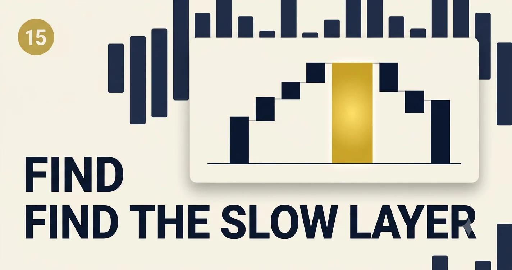

Latency Optimization for LLM Apps
Users feel latency before they read quality. In enterprise copilots, the difference between “instant” and “loading…” is often not the model—it is how you schedule retrieval, tools, and tokens on the critical path.
The autopsy that changed our SLO
We had a RAG assistant hitting a 4-second p95 while the model vendor swore their API was “fast.” A waterfall trace showed the truth: 1.2s embedding + vector search, 0.8s rerank on eight chunks, 1.4s waiting for full completion before showing anything, and only 0.6s in actual generation. We did not need a bigger GPU—we needed to move work off the serial path and stream the answer.
Latency optimization for LLM apps is not one knob. It is budget accounting: every millisecond belongs to a layer, and product SLOs should name which layer is allowed to spend it.
What users actually measure
Product and infra teams often argue past each other because they track different clocks:
- Time to first token (TTFT) — when the UI can show progress; dominates perceived speed in chat.
- Time to useful answer — first sentence that answers the question, not boilerplate disclaimers.
- End-to-end (E2E) — full response or structured payload delivered; matters for APIs and agents.
- Tool-augmented paths — sum of serial tool calls; agents can blow p99 without bad model latency.
Pick one north-star per surface. Copilots optimize TTFT + streaming; batch extractors optimize E2E throughput per dollar.
Critical path anatomy
sequenceDiagram
participant U as User
participant G as Gateway
participant R as Retrieval
participant M as LLM
U->>G: request
G->>R: embed + search
R-->>G: chunks
G->>M: prompt + stream
M-->>G: tokens
G-->>U: SSE chunks
Anything on the dashed critical path before the first token ships is “pre-LLM debt.” Parallelize or cache it. Anything after first token is “generation debt”—shrink output tokens, use smaller models for drafts, or speculative decoding where supported.
Latency Waterfall Lab
Stack your p95 budget by layer. Drag sliders to match a trace (or a guess). The bar and verdict show whether you are likely under a 3s copilot SLO.
Levers that actually move p95
max_tokens and structured schemas reduce generation tail latency more than faster chips.Anti-patterns from production
- Blocking on full RAG before calling the model when the user only asked for a summary of attached text.
- Giant system prompts on every turn—TTFT scales with prompt tokens.
- Synchronous tool chains where two read-only lookups could run together.
- No timeout budget—one slow tool holds the whole agent trace hostage.
SLO table for stakeholders
| Surface | Target TTFT | Target E2E | Measure |
|---|---|---|---|
| In-app copilot | < 1.5s | < 8s streamed | Client TTFT, server span |
| API extraction | N/A | < 12s p95 | E2E job duration |
| Agent workflow | < 2s first update | < 60s with steps | Per-step spans + user wait |
Implementation challenge
Export one slow trace from your gateway. Label each segment (gateway, retrieval, TTFT, generation, tools). If pre-LLM exceeds 40% of E2E, pick one parallelization or cache change before touching model size. Re-run the Waterfall Lab with before/after numbers.